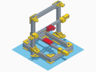
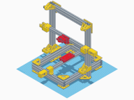
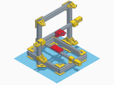
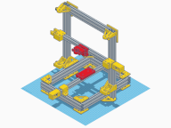

All your ideas are belong to us
or something like that. These are the current challenges that I'm working on whenever I have time to spare.
Closed Open Source.
dnsquery
dnsquery is a dead-simple DNS client that uses a ronin approach to resolve censored DNS entries in
censored environments. It manages the /etc/hosts
file to prevent DNS tracking in hostile
environments, so that entries are cached locally without the requirement of changes to a host machine's
resolv.conf
configuration.
This tool is implemented completely in pure go and has zero dependencies, making it a portable binary as it's only using POSIX syscalls and no userspace C libraries.
Pacman-Backup
Pacman-backup is a update and cache management tool that allows to download updates to USB drives so that another airgapped machine can stay disconnected from the internet while also being able to receive updates.
The tool features a clever mechanism of generating config files that are used together with pacman's
--config
flag. More details about this project can be found in the weblog article
pacman-backup.
Cookie's LPM Hashset Library
This is a new data structure that I've created for the Tholian Endpoint and outsourced it as a Go library. The LPM Hashset is a better data structure, which is orders of magnitude faster than an LPM trie and allows quick and fast longest-prefix-match lookups of network CIDRs and IPs.
It is using a unique concept of hashset maps that saves the time needed to resort a trie on insert in case the order of added CIDRs was unsorted, and allows to be have a very low memory footprint and ridiculously fast lookups (nanoseconds) in comparison.
The worst-case scenario uses 20
hashmap lookups, as the registry RIR datasets have a minimum
prefix length of /8
and a maximum prefix length of /28
(looking at you, RIPE). In
practice it's much less lookups on average (1 to 3), as the longest prefix wins and the hashset map
doesn't need a deep search in a tree structure.
More details about this project can be found in the weblog article You don't need LPM tries.
Cookie's Agenda
This is my attempt at creating a better Task Planner App. I don't like any other task planner
apps due to various reasons, which I am attempting to design/create/solve differently with
this tool.
The Agenda Task Planner is based on the idea that in order to understand the timeline of a project
or to understand the tasks and their time estimations in a different context, there needs to be
multiple views and projections, at any given time, for any given set of tasks.
Cookie's Forensics Tools
The Forensics Tools repository contains a lot of CLI tools for analyzing datasets, hard drives
or doing computer forensics work.
As this is a collection of useful tools that weren't existing as an alternative, the amount of
tools and codes is incrementally increased over time.
Antispam Classifier and Database
This is my attempt to fix the Postfix Spam problem, by having a locally running database
with dead-simple entries, and a unique LPM hashset technique that allows quick lookups of
malicious/spamming networks and ASNs.
The CLI tools included in this repository create ready-to-use postmap
files that can be
directly integrated into the Postfix main.cf
configuration file, without needing to contact
any external Web service or DNS service.
git-identity
git-identity
allows to manage multiple Git Identities, meaning several profiles that can be used
on a per-local-folder basis.
Oftentimes this is a necessary precaution to preserve anonymity online when doing
Redteam or consultancy work.
Additionally this ensures it's easy to work in the context of work products,
and is much easier to communicate in contracts than having thousands of exceptions
(aka open source libraries) written into it.
Defiant
Defiant is a Web Browser Extension (for both Firefox and Chromium)
that protects its users against Advertisement Trackers or malicious Entities
on the Web.
The Defiant Browser Extension tries to put the control over website behaviours back into the
hands of users, and not developers. Its concept works with Trust Levels, whereas the defaulted
Trust Level is Zero and doesn't allow anything malicious to happen. Incrementing the Trust Level
to a higher one will enable more risky features to make the Website or Web App work.
Me Want Cookies
Me Want Cookies is a Web Browser Extension (for both Firefox and Chromium)
that allows to export all visible cookies of the current Tab.
The exported format is a Netscape HTTP Cookie File
, also known as
cookies.txt
and can be used with various Web Scrapers and other
download tools, such as curl
or wget
.
Tholian Stealth
Stealth is a different kind of Web Browser that aims to achieve increased
User Privacy, Understanding and Automation of the Web. Its unique Cache
architecture allows to reuse downloaded content offline and peer-to-peer,
whilst sharing it with trusted Peers to increase bandwidth efficiency.
Stealth empowers its Users, not Website Developers that could abuse Web
Technologies to compromise the Freedom or Rights of Web Browser Users.
By default, it does not trust any Website or URL. Everything is whitelisted
by either Site Modes
or Site Filters
and Site Optimizers
whereas the latter two allow auditing the design, content and media of
regularly visited websites in an automated manner.
Stealth is not only a Web Browser, but also a Web Scraper and Web Proxy
that is scriptable and automateable in node.js environments and it supports
supports AI integrations for
understanding contexts and relations of content on Websites.
Outta Space
Download
-
The GNOME Shell Extension Outta Space
is a minimalistic extension
that leverages screen space in a simplified manner. It is GTK3
and GTK4 compatible and follows
the CSD guidelines of the GNOME
Desktop Environment project and does not patch or modify any user-centered
interactions.
By default, it will optimize the screen space by hiding the Top Bar and
the Window Title bars if they contain no useful elements that would
provide app menu or gtk menu interactions.
The Outta Space Extension is also made for extreme multi-head display
setups that consist of interconnected machines and has support for
X11
and Wayland on touch screens. It is already GTK4
compatible and allows Wayland users to interact with windows that
contain client-side decorations, too.
DNS Proxy
The DNS Proxy
has the idea to randomize the DNS pool based on a
list set via the resolv.conf
file. Additionally, it caches DNS
requests, so that additional requests for the same subdomains aren't
requested anymore to reduce network traffic.
Due to all ISPs overriding
DNS Answers with wrong TTL values for
DNS Queries in order to correlate
and track their customer's online browsing behaviour, this is my response
to the situation.
Research
Download
-
Research
was a Design and Feasibility Study inspired by the popular series Person of Interest.
Its design goals were to find out whether a navigation and interaction within a Web Browser can
be implemented completely on voice commands, and in an incremental manner. The incremental voice
commands allowed to filter out and (re-)sort displayed data, whereas the Tabs in the navigation
bread crumb reflected those interactions with the gathered data.
The personal assistive features were implemented with the lychee.js Engine
, which also
eased up shipment of pretrained neural networks that were helping the user to repeat common
interactions with the dataset. Additionally, neuralsort learned how to sort data over time
for repetitive actions on the datasets, which automated repetitive filter actions and views.
The GUI was implemented in nw.js, as it allowed much
more flexible integration with voice recognition APIs at the time - compared to electron as a
runtime.
The learnings of this Design Study are meanwhile merged into the Stealth Browser.
Switchine
Download
-
 



Switchine
is a 3D Printer and CNC
with the design goal of having multiple automatically replaceable tools. It can be used for
3D printing, wood and metal milling and other applications.
Its sturdy frame is built to last, and it focusses on using ISO measurements and standards
everywhere in order to ensure a high-quality build. The tool-switching mechanism is based
on electronic magnets and allows to switch tools without human interaction.
The design goal of the project is to find a simple 3D printer design that can be used as a
base while not overcomplicating things related to movement. Most other printers and milling
machines have movement precision issues due to the jerk and acceleration trade-offs that
come with using movement belts. However, Switchine aims to use magnetic MGN12
rails
in order to allow maximum precision while not sacrificing speed.
git-cockpit
The Git Cockpit
is a git overview tool with a reduced minimalistic web interface
in order to manage your local git repositories more efficiently.
The dashboard is aware of all git remotes, and uses the git porcelain commands
in order to figure out which repositories are out of sync, which repositories need
fixing and which repositories are ahead or behind of which remote.
git-work
Download
-
git-work
is a tool that allows to use GitHub and GitLab issues straight
from the Terminal without an internet connection.
It stores an offline-cache of issues that you can work with, without the necessity
of an internet connection while managing your issues locally. The issues are also
peer-synchronizable automatically with other remotes that are present as
git remotes
in the project's git config.
As each remote endpoint in the .git/config
is tracked and automatically
synchronized, it allows to host both upstream and downstream related issues.
This allows easy maintenance of forks and synchronization and easy management
of issues related to upstream bugs or pull requests that the downstream developer
was assigned to.
AI #3: Reinforced Pong AI with Evolution
The Reinforced Pong AI with Evolution
Game was part of a series of AI workshops
I taught in University. It is the third part of the series and demonstrates how
it's possible to scale up and parallelize training simulations of existing
Reinforcement Learning based AIs.
In order to do that, the attendees of the workshops had to implement an Evolution, the Gene Pool and Cross-Breeding Algorithms themselves in order to understand the benefits and advantages of a large-scale Multi-Agent Evolutionary Simulation compared to locally running Reinforcement Simulations.
This part of the workshop taught the attendees the essential concepts and differences of an Analytical AI and Generational AI architecture, its benefits and (dis)advantages, and how different Neural Search Architectures typically try to find the best Brain structure by keeping track of the dominant genes and phenotypes for their Agents.
AI #2: Reinforced Pong AI
The Reinforced Pong AI
Game was part of a series of AI workshops I taught in
University. It is the second part of the series and demonstrates how it's possible
to build a simple Pong AI and a simple Feed Forward Neural Network that learns how
to play the game by using Reinforcement Learning.
This part of the workshop taught the attendees the essential concepts of any Reinforcement Learning algorithm, and showed up potential quirks of Overfitting, Underfitting, Feature Selection techniques and what different kind of Learning (Error) Functions exist.
AI #1: Flappy Evolution
The Flappy Evolution AI
Game was part of a series of AI workshops I taught in
University. It is the first part of the series and demonstrates how it's possible
to build a simple Flappy Plane AI and a simple Feed Forward Neural Network that learns
how to play the game by using only Genetic Programming techniques and Cross-breeding
of the dominant Agents.
This part of the workshop taught the attendees the essential concepts of any Evolutionary Learning algorithm, and showed up potential quirks of Randomizations, the Learning Curve and the problems when the Population is momentarily stuck until a new set of randomized Agents comes up with a better solution.
Project Supra
(Closed Source)
-
In cooperation with ABB Research, Project Supra is a system built for the purpose
of automating the automation of factories.
Adapters translate the Siemens SPS
/ PLC Profinet network streams into
MQTT packets, which is stored
and processed on a huge cluster of MQTT Brokers.
The data is used to train a Co-Evolutionary backpropagated
ES/HyperNEAT
AI, which is able to learn from sensorics
inputs and can adapt and modify the programs on each Robot Cell while the system is
running inside the simulation.
As the training environment is simulated (but runs on real hardware as well) adapters
for ABB RobotStudio
translate the generated code back to RAPID
, the
proprietary robot programming language of ABB robots.
This cluster was able to achieve more than 1M simulations
per minute, which means the generated code reached a higher efficiency and quality than
over 30 years of human programming and refined work within less than a week in our prototype
factory when Supra came online.
Polyfillr Framework
Download
-
The Polyfillr Framework
is a modern ES2016+
based framework for Web Development in the modern age. It aims to be completely
transpiler-free and build-chain-free whilst offering modern APIs and Polyfills
from ES6 Harmony and later to legacy Web Browsers.
It is split up between a Console Polyfill, an ECMAScript Polyfill, and a Web
Components Polyfill that allows to implement real Web Components based on HTML
Imports and Custom Elements.
Its design goals is to be as small in size as possible, and as standards-compliant
as possible; whilst embracing simplicity in its APIs.
It can be used in Electron, NW.js,
Desktop Browsers, WebKit Mobile, Safari Mobile, Chrome, Firefox, Edge and outdated
Internet Explorer variants in a reliable way.
GitHub Scrumboard
The GitHub Scrumboard
is a simple Browser Extension for both Chrome and
Firefox that modifies the GitHub issues view by adding drag and drop into an
agile scrum board view that displays all issues present on the GitHub repository.
The GitHub Scrumboard allows to filter by milestones and it auto-labels issues
with backlog
, todo
, in-progress
, in-testing
and
done
behind the scenes.
The workflow is also integrated with git-work
and allows offline and
peer-to-peer synchronization of issues among all developers that work on the
same project. As the issues are synchronized per-remote and per-repository,
multiple remote endpoints can host not only identical, but also varying
kinds of issues that do not necessarily have to be synchronized upstream.
lychee.js Breeder
Download
-

The lychee.js Breeder
is part of the lychee.js Engine
and is a
a simple command-line tool that automates the initialization workflow of new
lychee.js Projects and Libraries.
It can initialize a new lychee.js Project (which is also an isomorphic
Library), integrate the lychee.js Harvester
, integrate external
Libraries and convert them into a format that the lychee.js Strainer
understands, and pull/push the Project into the peer-cloud, so that other
developers using lychee.js can benefit from its code and knowledge.
As the lychee.js Breeder is written in lychee.js, it is also learned by
the lychee.js Strainer
and therefore checked, verified and maintained
by the Artificial Intelligence.
node-websdl
The node WebSDL
Runtime is a prototypical runtime that allows to communicate
from node.js to libSDL2 in order to render graphics, leverage user input (for both
touch and legacy systems) and integrate windows into the Operating System.
As SDL is compatible with almost all
Operating Systems, the design goal of this project was to provide an alternative
runtime to Electron and NW.js. node.js was chosen as a platform, because it already
solves the networking, scheduling and system i/o in a reliable way.
lychee.js Harvester
Download
-
The lychee.js Harvester is part of the lychee.js Engine
and is a
peer-to-peer fully autonomous server that can understand and evolve multiple
network protocols, such as WS13,
HTTP1/1.1,
HTTP2,
TCP,
UDP,
ICMP
and SNMP.
The trained neural networks are able to do Traffic Sharding and Routing, and
are able to intelligently break NATs
by using NAT breaking techniques that they were taught.
Additionally, the lychee.js Harvester integrates all lychee.js Libraries and
Projects into a giant peer-cloud of development machines, which means that
every Project or Library created on this planet helps the lychee.js Strainer
to learn and understand the contained knowledge.
As the lychee.js Harvester is written in lychee.js, it is also learned by
the lychee.js Strainer
and therefore checked, verified and maintained
by the Artificial Intelligence.
lychee.js Fertilizer
Download
-

The lychee.js Fertilizer is part of the lychee.js Engine
and allows
fully autonomous reproducible and self-updating builds across all platforms.
It integrates the Fertilizer Adapters and Engine's serialization concept in
order to deploy to various platforms, including BlackberryOS, Android, FirefoxOS,
all Web Browsers, native Linux, Windows and MacOS, and even Arduino variants.
Its underlying concept allows quick and easy integration of new ECMAScript
runtimes that are bundled in the final application builds. These builds
contain all integrations in order to be remote-debugged and integrated into
the Neural Network learning workflow in order to trace down bugs more
efficiently and let the lychee.js Strainer
learn how to fix, rewrite
and deploy the application better in future.
As the lychee.js Fertilizer is written in lychee.js, it is also learned by
the lychee.js Strainer
and therefore checked, verified and maintained
by the Artificial Intelligence.
lychee.js Engine
Download
-
The lychee.js Engine is a Next-Gen Isomorphic Application Engine for Embedded,
Console, Mobile, Server and Desktop.
It has the core idea to reuse components and isomorphic code across all platforms
it delivers to. These platforms can be incremental in its feature support, which
means also low-end platforms like Arduino variants are supported.
The lychee.js Engine delivers to different platforms using so-called Fertilizer
Adapters which allow feature detection and automated isomorphic builds from and
to every single platform it supports using the lychee.js Fertilizer
.
Underneath the lychee.js Engine has a strong serialization and deserialization
concept that allows simulations and re-simulations across all platforms. Errors
can be reproduced everywhere, even network traffic and user interactions are put
in event graphs and are identified and learned by neural networks in order to
figure out what module had corrupt states or data.
Adblock Proxy
Download
-
The Adblock Proxy blocks advertisements and has support for Adblock Filter lists
and Host files. The project aims to cleanup advertisement from web pages, in order
to speed up loading times and offer a better user experience.
Even better, the Adblock Proxy is also able to parse the HTML files and apply
Adblock Filters directly there, so that the seen HTML
by the Web Browser
is completely advertisement free.
The learnings of this project are meanwhile merged into the Stealth Browser.
Skye Drone
The Skye Drone is an interactive drone written as a lychee.js Project.
It integrates the underlying AI
stack and teaches neural networks how to command and control drones
intelligently, while leveragint the advantages of snapshots, serializations
and simulations so that errors can be reproduced and training happens
more efficiently.
The neocortex is divided into two different areas: The active cortex,
which allows human interaction and manual controls (e.g. via Myo HID)
and the passive cortex, which allows autonomous controls, flight
stabilization, and interaction with its own sensors and electronics.
The hardware is using a Raspberry Pi and a custom designed PCB
that interacts as a motor driver to interact with the ESCs,
with a stty interface for quick and easy communication.
Zynga Jukebox
Download
-
The Zynga Jukebox is a component for playing sounds and music with the usage of
sprites with a focus on performance and cross-device deployment. It is known to
run even on Android 1.6+ devices and needs very few resources compared to other
solutions on the web.
It features a self-correcting Audio Loop
which ensures that at any given
time no asynchronous playback happens, which is very important on low-end mobile
platforms that try to decode async media codecs like MPEG3
or similar.
Additionally, the Audio Loop allows to have multiple Track
instances that
are managed in parallel and prioritized accordingly to their usage and relevance.
The audio track stack is automatically cloned and instanciated in the background,
and less used tracks have less percentage of available tracks in the track stack.
Zynga Speedrun
The Zynga Speedrun is a rendering benchmark created as a project for the
partnership between Zynga and the Browser Vendors. As rendering performance
of HTML5 canvas and
WebGL was slow, there was a need
for alternative DOM-using
rendering methods as a Renderer backend.
The Zynga Speedrun also features a Kiosk Mode
which can be deployed
on multiple devices in the same network in order to benchmark them accurately
and fully autonomously.
All results are then collected on the server-side and can be compared, so
that the best rendering techniques and combinations can be selected.
webslide.me
Download
-
webslide.me
is both a Web Service and Web Presentation Framework that
allows the creation of HTML5 and CSS3 slides for use in the Web Browser.
The framework works in Mobile Web Browsers, as well as Desktop Web Browsers,
and integrates a Remote Control feature via Web Sockets so that the audience
views the same slides as the presenter. The Remote Control also offered the
capability of asking questions to the topics that were displayed in the active
Slide, in order to motivate the audience's interest.
Additionally, the Slide Editor is able to edit all slides via a graphical
in-Browser user interface.
Patienteninfo-Service
The Patienteninfo Service
is the official web platform for customer
information data (and the package inserts
that are required by European
Law) of drugs and medicines.
The doctor-facing database contains more than 1.5M+
entries and offers searching and cross-referencing of interactions between
medicaments and clinical studies, and an integration with the patient's medical
history.
The customer-facing database offers a download of the package insert
document in various formats. As the web platform is totally barrier-free, those
formats included PDF,
HTML,
DAISY and other
audio book and screen reader compatible formats.
DAISY Pipeline
The DAISY pipeline
is an end-to-end TTS pipeline to convert
various document formats such as PDF,
EPUB or
HTML to the DAISY audio book
format. The Pipeline also allows to integrate third-party speech synthesis
services, so that text can be split up into paragraphs that can be voiced
over automatically.
It is used in the Patienteninfo-Service
, which is the official information
service provider for medical supplies required by the European Union
and offered by the Rote Liste
.
GIBook Editor
Download
-
The GIBook Editor
is a simple tool to edit the intermediary format
called GIBook XML
of the Rote Liste
.
This tool was used internally in order to be able to manually correct
broken auto-converted RTF documents
that had missing sections, paragraphs, or malformed texts in them.
Dailycheck
(Closed Source)
-
The Dailycheck
is a software that allows to automatically check
complex UI/UX workflows in server-side applications and web applications,
in order to check for their operational status.
It is possible to completely integrate complex workflows using a headless
Web Browser instance and both server-side and client-side plugins.
The Dailycheck mainly is used to completely verify complex web form
interactions and workflows, such as uploading and converting files online
end-to-end or to verify status reports of processes on remote servers, such
as the temperature and SMART sensor data on an in-house server cluster.
Pfizer Marketingportal
The Pfizer Marketingportal is a web platform that automates the document
creation, document editing and document printing and publishing pipeline
for the Pfizer Pharma conglomerate.
The media database primarily made for PDFs, pictures, photos and documents
features several workflows, including a bidding system for publishers and
an automated pipeline for classification of rated content, words and filters.
It is an end-to-end 100% automated publishing platform that is able to send
orders of to-be-published documents directly from the Designer's computer
straight to the big Heidelberg Druckmaschine
industrial printers.
jQuery Desktop
Download
-
The jQuery Desktop
is an experiment that tried to implement a Web Browser
based Desktop interface in order to reflect common application functions.
Its underlying idea is to provide a management interface that can be used
from external devices, for example as a remote server management interface.
Over the years many random projects reused the code of this experiment,
and made fun and interactive user interfaces with it. Code-wise, this was
a prototype, and should be treated as such.
Webmail
Download
-
The Webmail Interface
is a Web Service compatible with all mobile
phones, including low-end feature phones that have no touch screen.
Its configuration allows to have multiple endpoint connections, it is also
compatible with IMAP
and POP3, both encrypted via
SSL/TLS and unencrypted.
Its design goals are to have a small webmail interface that heavily reduces
internet bandwidth and is made for usage via 2G Slow
or throttled mobile
internet connections - while still allowing the end-user to draft, send and
receive E-Mails with a simplified Web Browser user interface.
Vespolu
(Closed Source)
The Vespolu manager is a self-hosted web platform written in C++ and PHP, and
allows the synchronization and cyber intelligence part of documents, files,
contact books, SIM card contents and software across multiple portable devices
(both Java SE based feature phones and Windows based PDAs at the time).
It also featured the transmission of Silent SMS (also known as Class 0 SMS
)
in order to force-deploy software to known IMEI/phone numbers, because there
is actually no security measurement in place to prevent that.
The targeted networks are carrier-grade NATs
that require NAT breaking techniques in order to ensure unthrottled
connectivity to other devices and ISP
networks.
As the NGN migration of all ISPs
was done in 2004-2006, Vespolu was already able to exploit out of the
hardware-layered VC4 routing protocol.
TiMon
(DTAG Intranet)
-
The Telekom Trainee Information Management platform (in short TiMon
)
is a web portal that was designed to automate the process of the interaction
between employees, trainees and the legal requirements.
The online platform integrated a chat, calendar features, synchronizable
events with the Telekom MDA (Windows Mobile
platform), document
management with an automated conversion, signing and submission pipeline
to the German IHK.
StegIt
Download
-
StegIt is a tool to embed and extract steganographically hidden data in
various image formats.
It intelligently searches for all possible rectangular areas in order to
recognize patterns that look like encrypted blocks of known algorithms.
StegIt is able to recognize multiple header formats intelligently and
offers various ways of using password-cracking techniques on the image
in order to encode/encrypt or decode/decrypt it.
Additionally, various synchronous encryption algorithms
can be chosen from to use a password for embedding your data.